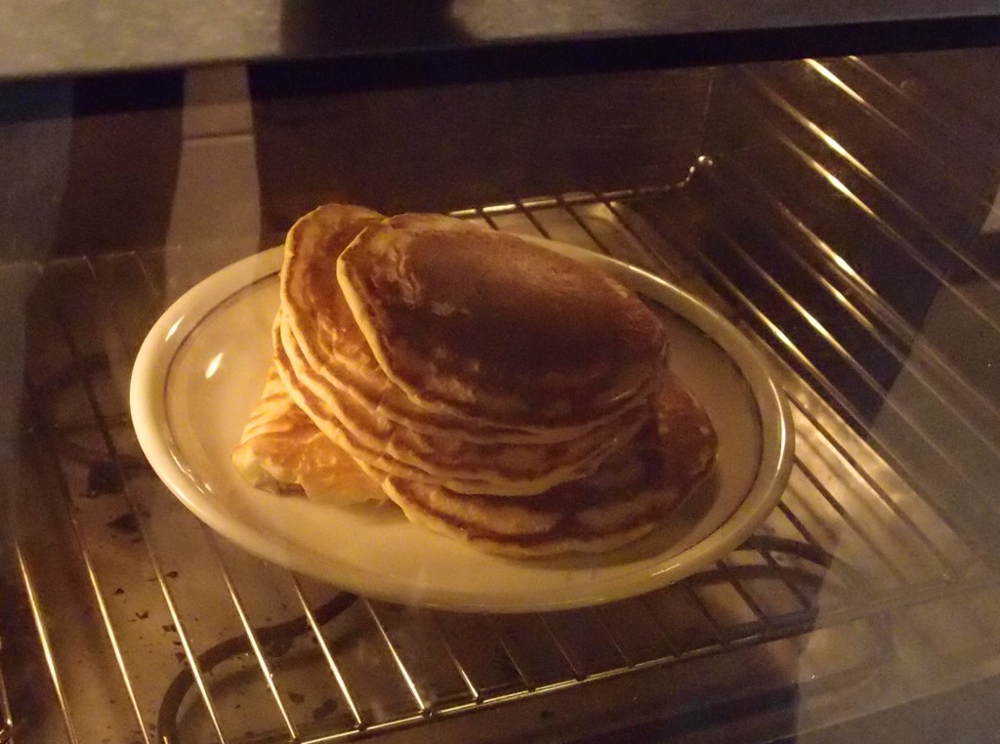

Pancakes

Steps
- In a large bowl, sift together the flour, baking powder, sugar, and salt. Make a well in the center and pour in the milk, melted butter, and egg; mix until smooth.
- Heat a lightly oiled griddle or frying pan over medium high heat. Pour or scoop the batter onto the griddle, using approximately 1/4 cup for each pancake. Brown on both sides and serve hot.
Ingredients
- 200 g flour
- 10 g baking powder
- 25 g sugar
- salt
- 300 ml milk
- 30 g butter, melted
- 1 egg